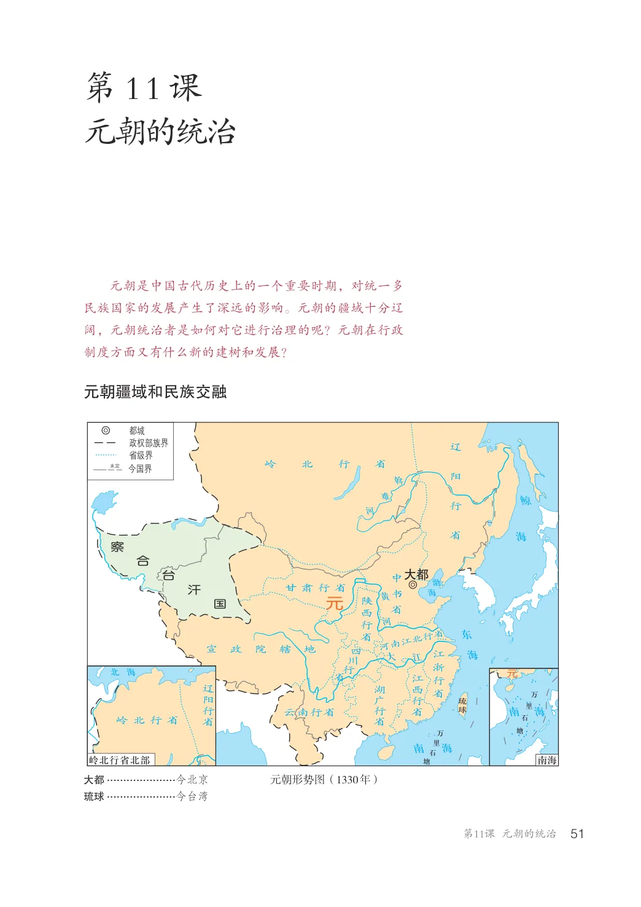
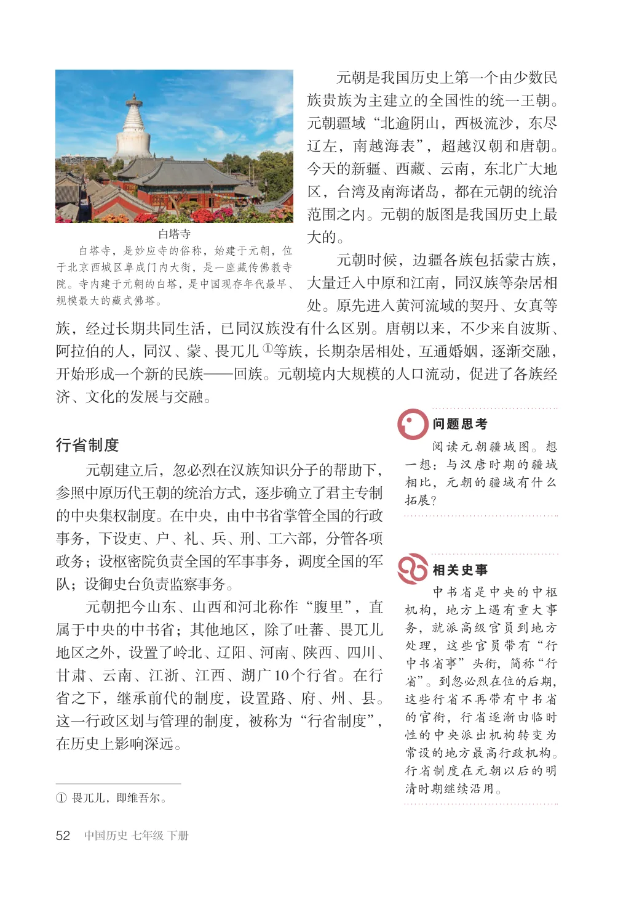
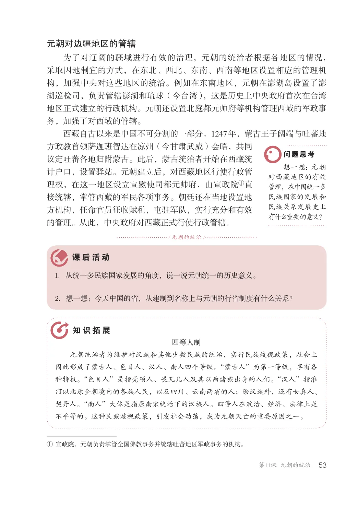

第2单元 · 教材第 51–53 页
第11课 元朝的统治
文字版依据教材 PDF 文本层整理；复杂地图、图表及版面关系请以右侧教材原页为准。
元朝是中国古代历史上的一个重要时期，对统一多民族国家的发展产生了深远的影响。元朝的疆域十分辽阔，元朝统治者是如何对它进行治理的呢？元朝在行政制度方面又有什么新的建树和发展？
元朝疆域和民族交融
都城政权部族界省级界
岭北行省
今国界未定
大都台合察汗国
甘肃行省
陕西行省
元
河南江北行省
宣政院辖地
江浙行省江西行省
辽阳行省
湖广行省云南行省
岭北行省
万里石塘
岭北行省北部
元朝形势图（1330年）大都.....................今北京
琉球.....................今台湾

元朝是我国历史上第一个由少数民族贵族为主建立的全国性的统一王朝。元朝疆域“北逾阴山，西极流沙，东尽辽左，南越海表”，超越汉朝和唐朝。今天的新疆、西藏、云南，东北广大地区，台湾及南海诸岛，都在元朝的统治范围之内。元朝的版图是我国历史上最大的。元朝时候，边疆各族包括蒙古族，大量迁入中原和江南，同汉族等杂居相处。原先进入黄河流域的契丹、女真等族，经过长期共同生活，已同汉族没有什么区别。唐朝以来，不少来自波斯、阿拉伯的人，同汉、蒙、畏兀儿①等族，长期杂居相处，互通婚姻，逐渐交融，开始形成一个新的民族—回族。元朝境内大规模的人口流动，促进了各族经济、文化的发展与交融。
白塔寺白塔寺，是妙应寺的俗称，始建于元朝，位于北京西城区阜成门内大街，是一座藏传佛教寺院。寺内建于元朝的白塔，是中国现存年代最早、规模最大的藏式佛塔。
行省制度
阅读元朝疆域图。想一想：与汉唐时期的疆域相比，元朝的疆域有什么拓展？
元朝建立后，忽必烈在汉族知识分子的帮助下，参照中原历代王朝的统治方式，逐步确立了君主专制的中央集权制度。在中央，由中书省掌管全国的行政事务，下设吏、户、礼、兵、刑、工六部，分管各项政务；设枢密院负责全国的军事事务，调度全国的军队；设御史台负责监察事务。元朝把今山东、山西和河北称作“腹里”，直属于中央的中书省；其他地区，除了吐蕃、畏兀儿地区之外，设置了岭北、辽阳、河南、陕西、四川、甘肃、云南、江浙、江西、湖广10个行省。在行省之下，继承前代的制度，设置路、府、州、县。这一行政区划与管理的制度，被称为“行省制度”，在历史上影响深远。
中书省是中央的中枢机构，地方上遇有重大事务，就派高级官员到地方处理，这些官员带有“行中书省事”头衔，简称“行省”。到忽必烈在位的后期，这些行省不再带有中书省的官衔，行省逐渐由临时性的中央派出机构转变为常设的地方最高行政机构。行省制度在元朝以后的明清时期继续沿用。
①畏兀儿，即维吾尔。

元朝对边疆地区的管辖
为了对辽阔的疆域进行有效的治理，元朝的统治者根据各地区的情况，采取因地制宜的方式，在东北、西北、东南、西南等地区设置相应的管理机构，加强中央对这些地区的统治。例如在东南地区，元朝在澎湖岛设置了澎湖巡检司，负责管辖澎湖和琉球（今台湾），这是历史上中央政府首次在台湾地区正式建立的行政机构。元朝还设置北庭都元帅府等机构管理西域的军政事务，加强了对西域的管辖。西藏自古以来是中国不可分割的一部分。1247年，蒙古王子阔端与吐蕃地方政教首领萨迦班智达在凉州（今甘肃武威）会晤，共同议定吐蕃各地归附蒙古。此后，蒙古统治者开始在西藏统想一想：元朝对西藏地区的有效管理，在中国统一多民族国家的发展和民族关系发展史上有什么重要的意义？
计户口，设置驿站。元朝建立后，对西藏地区行使行政管理权，在这一地区设立宣慰使司都元帅府，由宣政院①直接统辖，掌管西藏的军民各项事务。朝廷还在当地设置地方机构，任命官员征收赋税，屯驻军队，实行充分和有效的管理。从此，中央政府对西藏正式行使行政管辖。
/ 元朝的统治/
1．从统一多民族国家发展的角度，说一说元朝统一的历史意义。
2．想一想：今天中国的省，从建制到名称上与元朝的行省制度有什么关系？
四等人制元朝统治者为维护对汉族和其他少数民族的统治，实行民族歧视政策，社会上因此形成了蒙古人、色目人、汉人、南人四个等级。“蒙古人”为第一等级，享有各种特权。“色目人”是指党项人、畏兀儿人及其以西诸族出身的人们。“汉人”指淮河以北原金朝境内的各族人民，以及四川、云南两省的人；除汉族外，还有女真人、契丹人。“南人”大体是指原南宋统治下的汉族人。四等人在政治、经济、法律上是不平等的。这种民族歧视政策，引发社会动荡，成为元朝灭亡的重要原因之一。
①宣政院，元朝负责掌管全国佛教事务并统辖吐蕃地区军政事务的机构。
